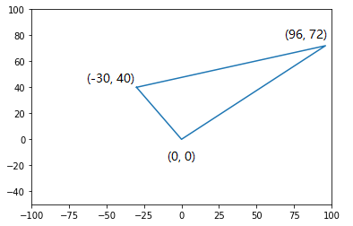
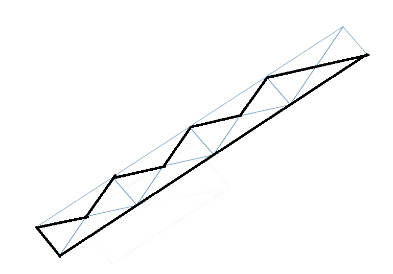

XVIII Open Cup named after E.V. Pankratiev. Grand Prix of Urals
Overview
| Status | A | B | C | D | E | F | G | H | I | J | K | L | M |
|---|---|---|---|---|---|---|---|---|---|---|---|---|---|
| Contest | 0:34 | 3:56 | 1:37 | —- | —- | —- | 0:23 | 3:03 | —- | —- | 2:29 | —- | —- |
| Upsolve | OK | OK | OK | AC | AC | OK | OK | AC | OK | TLE | AC | ||
| Attempt | +2 | +2 | +3 | *1 | *3 | +1 | +3 | *2 | + | *9 | * | ||
| Total AC | 183 | 131 | 138 | 88 | 45 | 3 | 146 | 120 | 11 | 116 | 139 | 45 | 47 |
dirt $60\%$ 啊，还是要提高代码准确性啊。
总览：
- Solved 6 out of 13
- Upsolved 11 out of 13
- Rank 108 out of 202 （击败 $46.53\%$ ）
- 这场比赛动态规划涉及较多
- C是二分加多重背包
- D是bitset优化完全背包的dp，比赛时被这道题卡了。
- K是一个有趣的构造
- L 题状压dp卡常数！
- M题必须手写高精度！
踩过的坑点：
- A：仅仅有一个环并不构成苹果！WA * 2
- B：少判断h之和是否相等。WA * 2
- C：数组越界，玄学输出。WA * 3
Prob. A 图的遍历
模拟题意即可。
1 |
|
Prob. B 排序
由题意，对于一个图表 $G$ 的一系列区间 $[l_1,r_1-1],[l_2,r_2-1],\cdots,[l_n,r_n-1]$ ，我们得到的是一系列下面的等式：
$$
a[l_i,r_i-1] = h_i
$$
利用前缀和，令 $pre_h[i] = \sum\limits_{j=1}^{i} h[i]$ ， $pre_a[i] = \sum\limits_{j=1}^{i} a[i]$则条件转化为：
$$
pre_a[r_i-1]=pre_h[i]
$$
即：针对 $pre_a$ 的一系列等式。把两个图表对应的等式求出，排序，然后判断是否矛盾即可。
注意：必须判断两个图表 $h$ 数组的和相等！当时没注意这一点，然后玄学WA了好久。
1 |
|
Prob. C 二分，多重背包
Solution
- 首先，可以二分答案，将问题变为判定性问题。
- 这个判定性问题是什么呢？假设我们在检查答案 $x$ ，对于每种物品，有价值 $m_i$，我们可以选择 $0$或$1,\cdots, \lfloor\frac{c_i}{x}\rfloor$个，问能否选出一些物品，使得总价值在区间 $[mn, mx]$ 的范围内。
- 这个问题就是多重背包问题，只需要使用二进制拆分或者单调队列即可解决。（这里实现的是二进制拆分）
坑点：二分上界 $r$ 别设小了，当时WA了一次。
时间复杂度： $O(10000 \cdot \log (1e6) \cdot \log c)$
Code
1 |
|
Prob. G 折半搜索
搜一半，放进map；再搜另一半，在map里查询。
Thinking & Code by sl
1 |
|
Prob. H 暴力？
Thinking & Code By sl，明天再仔细看看
1 |
|
Prob. K 构造
Description
要求你构造一个 $n$ 条边的简单多边形，使得顶点都是整点，且每条边的长度都是整数。（ $n\leq 30$ ）
Solution
个人认为这道题的构造还是非常精妙的。首先我们构造这样的一个三角形：

我们可以发现，这个三角形是个直角三角形，且三边长都是整数。其斜边中线也是整数。由此，我们可以拼出一列平行四边形，而每个平行四边形四个顶点和中心点都是可以选取的。如下图所示，就展示了九边形的构造方法；类似地可以构造其他情况。

Code
1 |
|
赛后补题
Prob D. DP, bitset
Solution
设计状态为 $dp[w][S][C]$，表示宽为 $w$，面积为 $S$，周长为 $C$ 的情况是否可行。为了构造方案，还需记录转移方案数组 $fa[S][C]$ 表示面积为 $S$，周长为 $C$ 的时应当选哪一个矩形。
转移就是枚举矩形的长 $l$ 的过程，注意每一种矩形都可能出现无限次，因此是个完全背包。采用刷表法，那么转移方程就是：
$$
dp[w-1][S][C] \rightarrow dp[w][S][C] \tag{1}
$$
$$
dp[w][S][C] \rightarrow dp[w][S+ l\cdot w][C+2\cdot(l+w)] \forall l \in [w,1000] \tag{2}
$$
在状态转移的过程中更新 $fa$ 数组。但是这么做状态数 $\Theta(\sqrt{S} \cdot S \cdot C)$ ，由于调和级数，转移复杂度均摊下来是 $\Theta(\log n)$ ，总的的复杂度是 $O(\sqrt{S} \cdot S \cdot C \cdot \log S)$ ，无论时间和空间都是比较吃紧的。因此还需要进行优化：
- 滚动数组。使用滚动数组可以使空间复杂度降至 $S\cdot C$ ，并且使得代码变得更加简洁；
- bitset优化。注意到转移式 $(2)$ 中对于周长 $C$ 这一维的更新来说， $S,l,w$ 都是确定的，因此这一维只是一个错位意义下的按位或，使用bitset后复杂度除以 $w$ ，可以通过。但是，还有一个问题： $fa$ 数组该如何更新？如果暴力判断哪些状态被更新到，那么复杂度降低的 $w$ 将前功尽弃。实际上，我们用更新后的 bitset异或更新前的，求出哪些位置被更新，然后用bitset自带的
_Find_first()和_Find_next()函数把这些位置更新，即可继续保持复杂度除以 $w$。这种操作感觉还是第一次在比赛时使用。
下面列出bitset这两个不太常用的函数的一些性质吧：点这里是介绍这两个函数的博客
- 时间复杂度 $O(\frac nw)$
- 如果找不到1，则返回
bitset.size()。
Code
1 |
|
Prob. J 最短路，贪心
由于在每个地方都可以进行等待，因此一定是越早到达某个位置越好。预处理出每一时刻走某条边最短花费，然后直接求最短路即可。
1 |
|
Prob. E 交互，构造
Description
一共有六个骰子，每个骰子每一面上都有一个字符串，你可以选择一个骰子进行投掷，系统会随机返回这一次投掷的结果，然后你需要把投掷结果的字符串合理拼接，组成一个合法的恒成立的式子。（你最多可以投掷 $1000$ 次）
这六个骰子的描述如下：
- Type 1: = < > != <= >=
- Type 2: 4 + - ( ( )
- Type 3: 0 / / / 8 +
- Type 4: 2 3 4 5 - )
- Type 5: + - * / 1 9
- Type 6: 6 7 + - ( )
Solution
每个询问到的字符都必须用到，这个条件有些棘手。很容易想到利用 $0\cdot x=0$ 的性质，可是怎么用呢？这要根据比较运算的不同分类讨论。我们有下面的策略：
- 首先问出两个0，一个2，”+”, “-“, “*” 符号各问出一个。
- 然后不断询问第二个骰子和第四个骰子，保证以下两个条件均满足：
- 首先，括号至少出现一对，并且左右括号数量相等
- 其次，非零数字的出现次数比运算符的出现次数多不少于5次
如果这两点满足了，那么我们这样构造方案：
- 首先确定比较运算符的左边，如果运算符是”>”，则让左边是0+2；如果是”<”或”!=”，则让左边是0-2。
- 然后右边是类似 0*(()) 的形式。右边括号里的数只需要在剩下的数字中插入没用完的运算符即可。
Code
1 |
|
Prob. L 状压dp，卡常数
Solution
首先，同一行或同一列边界上如果是箱子，且字母不同，则会使答案加倍；把这些加倍的因子处理出来，我们就可以把箱子视作相同了。
令 $dp[row][col][mask][k]$ 表示考虑到第 $row$ 行，第 $col$ 列，第 $i$ 列剩余未填数量为 $mask$ 三进制表示下第 $i$ 位，第 $row$ 行还剩 $k$ 个没有填，则枚举在这一个的行动即可转移。
必须使用滚动数组优化内存，而这样的复杂度是 $O(n^2 3^{n+1})$ 的，实际上还是会TLE on test 20。。。所以我哕了。Claris的代码也会TLE。
Code
这份代码会TLE on test 20。。。也没招了
1 |
|
Prob. M 高精度，树dp
显然的树dp。。。但要用高精度就很烦。
1 |
|